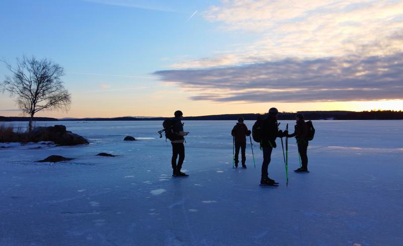

Ankomst
Du ankommer overnattingsstedet i Falun. Tid til å gjøre klart utstyret og ta en titt på isen.

Skøyting på historisk is i Dalarna, med Faluns karakteristiske røde gruvebygninger i bakgrunnen.


Skøyting over en sjø hvor det har blitt arbeidet og levd i århundrer.
Falun ligger i Dalarna, akkurat som Orsa, ved nordenden av Runn - den store innsjøen i dette området. Byen har navnet sitt fra kobberutvinningen som foregikk der i århundrer - derav de røde gruvebygningene du ser fra isen.
Nøyaktig hvor du går på skøyter, står aldri fast på forhånd. Du skøyter på egen hånd, og naturis lar seg ikke planlegge: været og iskvaliteten avgjør hver dag hvor du kan skøyte.
Du bestiller Falun som en komplett pakke: flyet, leiebilen og overnattingen er ordnet, og du velger selv når du drar.
Akkurat som ved Orsa bor du i egne hytter tett ved isen, slik at dere sitter sammen om kvelden og går rett ut om morgenen.
Overnattingen for Falun fastsettes for øyeblikket. Så snart den er kjent, står den her.



Falun er en pakketur som du setter sammen selv: du velger ankomstdagen din og hvor lenge du blir, fra 4 dager. Flyet, leiebilen og overnattingen er inkludert. Ordner du heller flyet eller transporten selv, huker du av det, og beløpet trekkes fra prisen.
Du velger ankomstdagen din og blir minst 4 dager.
Du setter sammen turen og betaler direkte på nett.
Som standard er det ingen guide med, og du planlegger dagene dine selv. Mellom 10. januar og 20. februar kan du bestille veiledning på isen i tillegg.
Rekkefølgen ligger fast, innholdet ikke. Hvor du skøyter bestemmer du selv hver morgen, ut fra været og isen.
Du ankommer overnattingsstedet i Falun. Tid til å gjøre klart utstyret og ta en titt på isen.
Rolig start på den feide banen, slik at du venner deg til naturisen og skøytene.
Hver morgen ser du på været og iskvaliteten, og bestemmer selv hvor du drar. Noen ganger er det den lange banen over sjøen, andre ganger går du over til annen is i området.
Avhengig av reisetiden din er det om morgenen ofte plass til en siste runde over isen før du drar.
Det nøyaktige antallet dager avhenger av reisedatoen. Så snart den er fastsatt, tilpasses programmet deretter.
Lurer du på om noe er inkludert? Bare spør, så vet du det sikkert.
Falun ligger ved Runn, den store innsjøen i Dalarna. Nøyaktig hvor vi går på skøyter, står aldri fast på forhånd: vi ser hver morgen på været og iskvaliteten, og går om nødvendig over til annen is i området.
Ikke som standard: Falun er en pakketur som du bestiller selv. Flyet, leiebilen og overnattingen er inkludert, sammen med online service på forhånd. Du skøyter på egen hånd, og det krever at du selv kan vurdere om isen er trygg. Vil du ikke ut på isen på egen hånd, kan du mellom 10. januar og 20. februar bestille veiledning på isen i tillegg: €100 per dag for 1 person, + €50 per dag for hver ekstra person, for så mange dager du vil. Ledede gruppeturer er fortsatt under planlegging.
Inkludert er flyet til Sverige, leiebilen på stedet, oppholdet i hyttene og online service på forhånd. Ikke inkludert er ditt eget skøyteutstyr og vinterklær, det obligatoriske sikkerhetsutstyret (isbrodder og hjelm), mat og drikke og forsikringer. Ordner du heller flyet eller leiebilen selv, trekkes det beløpet fra prisen.
Skøyteturen til Falun koster fra €995 per person for 4 dager. Du velger selv når du reiser: i kalenderen på denne siden velger du ankomst- og avreisedag, mellom 19. desember 2026 og 14. mars 2027. Du reiser i minst 4 dager, og hvilke dager som fortsatt er ledige, ser du i kalenderen. I desember er isen mest usikker. Du bestiller og betaler direkte på nett.
Du trenger ikke å være konkurranseløper, men du må kunne skøyte selvstendig og kontrollert. Er du i tvil om nivået ditt, tenker Joey gjerne med deg på forhånd.
Det bestemmer du selv: du skøyter på egen hånd og planlegger dagene dine selv. Hvor mye det blir, avhenger også av isen og været den dagen.
Falun er en god første kontakt med skandinavisk naturis, nettopp fordi flyet, leiebilen og overnattingen allerede er ordnet. Som standard skøyter du på egen hånd, og det krever at du selv kan vurdere om isen er trygg. Mellom 10. januar og 20. februar kan du bestille veiledning på isen i tillegg. Det er fortsatt naturis: god forberedelse hører med.
Naturis kan ikke garanteres. Været og iskvaliteten avgjør hver dag hvor du kan skøyte. Der det er nødvendig, går du over til en annen egnet sjø i området.
Du tar med ditt eget skøyteutstyr og vinterklær. For naturis anbefaler vi langrennsskøyter; klærne dine må være egnet til å være ute en hel dag. Isbrodder og hjelm er obligatorisk.
Ja. Skøyteturene er alltid avhengige av været og iskvaliteten. Se derfor hver dag på nytt på forholdene, og tilpass ruten din etter dem. Ingen dag ligger helt fast på forhånd.
Prisen starter på €995 per person for 4 dager når dere er to. Fly, leiebil og overnatting er inkludert. Ordner du flyet eller transporten selv, trekkes det fra prisen.
Så snart kalenderen er lastet, velger du ankomstdagen din her. Fungerer det ikke, send e-post til schaatsennovakse@outlook.com.
Orsa og Finland er, akkurat som Falun, selvstendige turer som du planlegger selv. I Orsa kan du også bestille veiledning på isen i tillegg. Ledede gruppeturer er fortsatt under planlegging.